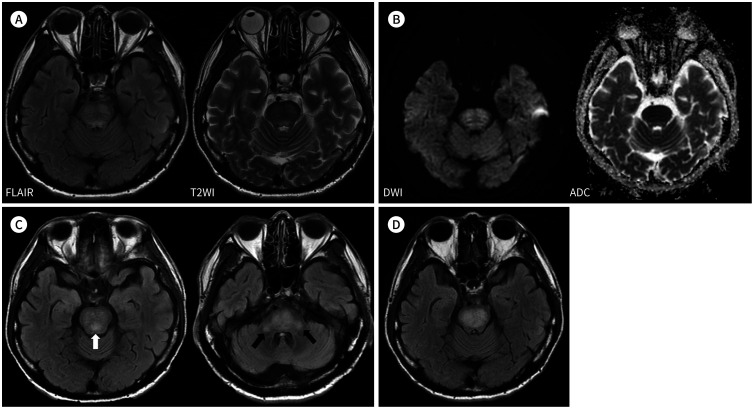
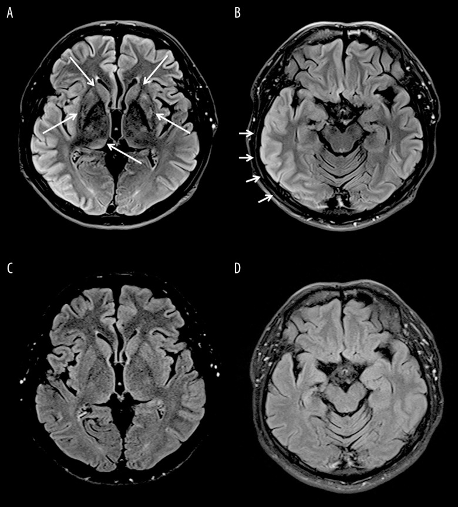
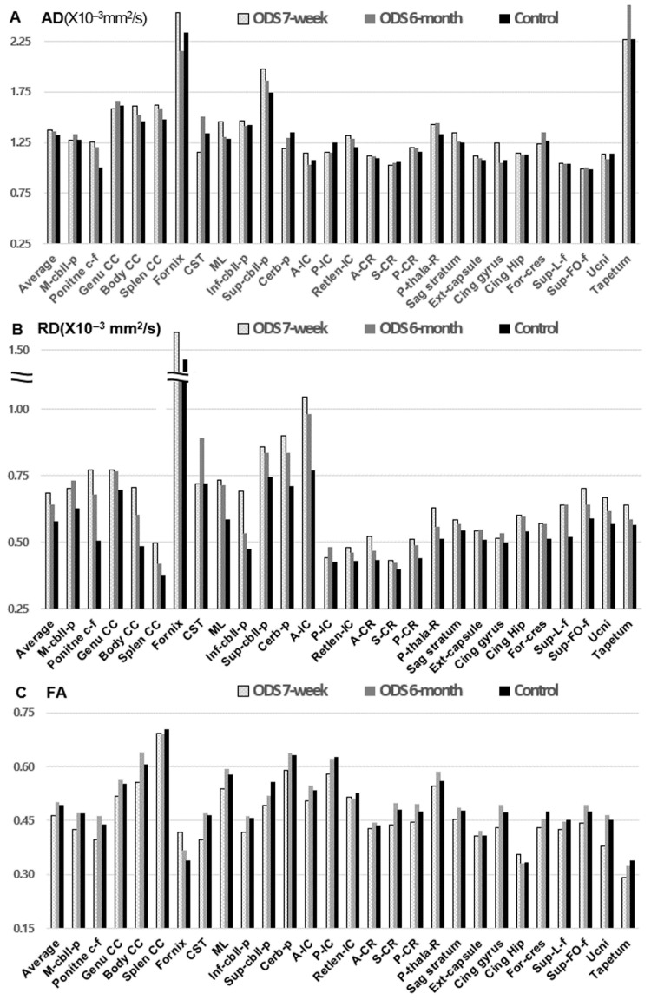
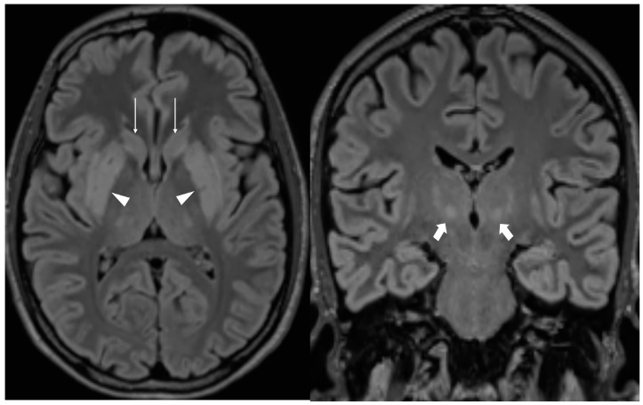

1892 — Theo dõi sau hội chứng hủy myelin thẩm thấu (ODS): MRI lúc nào, đọc thế nào, tiên lượng phục hồi / Follow-up of osmotic demyelination syndrome
Tags: pattern:huy-myelin pattern:doi-xung pattern:teo-nao vung:nao vung:than-neu vung:cau-nao vung:hach-nen protocol:MRI protocol:DWI protocol:DTI
Mức chắc chắn (certainty): tổng hợp y văn (literature synthesis) — số liệu từ ca có ảnh chụp nối tiếp (PMC9432104, PMC7370574, PMC13214892), nghiên cứu DTI dọc (PMC12985121), tổng quan hệ thống nhi khoa (PMC12221483), phân tích gộp desmopressin (PMC13491862) và các tổng quan điều trị 2026 (PMC13627832, PMC13620182). Câu nào là suy luận được ghi [suy luận].
Vì sao bài này quan trọng: 1866 đã chốt chẩn đoán cấp (trident, DWI sớm, ngưỡng sửa natri). Nhưng câu hỏi thực tế xuất hiện vài ngày sau đó, khi bệnh nhân đã qua cơn nguy kịch: "MRI xấu đi nghĩa là bệnh nặng lên hay là diễn tiến bình thường? Chụp lại khi nào? Tổn thương còn trên phim thì có còn triệu chứng? Có tái phát không?" Ba câu trả lời định hình bài này: (1) trong 10 ngày–1 tháng đầu, tổn thương có thể lan rộng trên MRI trong khi triệu chứng đã cải thiện (ca PMC9432104); (2) đến 2 tháng tổn thương có thể gần như biến mất (PMC7370574) và lúc 6 tháng vi cấu trúc myelin hồi phục đo được bằng DTI (PMC12985121); (3) hình ảnh không dùng để quyết định ngừng điều trị — trong một loạt 16 ca u lympho, 56,3% ca có tổn thương cầu não hoàn toàn không triệu chứng (PMC12797817).
1. Tổng quan bệnh học – cơ chế hình ảnh (TẠI SAO hình ảnh đi sau lâm sàng)
1.1 Chuỗi mô bệnh học quyết định "lịch" của hình ảnh
- Giờ đầu – 48 giờ: tế bào hình sao (astrocyte) mất nước do ưu trương ngoại bào, phù độc tế bào → nước chuyển vào nội bào, khuếch tán giảm → DWI tăng, ADC giảm. Đây là dấu sớm nhất, có trước T2/FLAIR 1–2 tuần (xem 1866 §1).
- Ngày 3 – 14: myelin tách lớp, đại thực bào dọn mảnh myelin, phù gian bào tăng → nước tự do tăng → T2/FLAIR sáng, T1 tối dần. Đỉnh tín hiệu T2 không trùng đỉnh triệu chứng: tín hiệu còn lan rộng thêm khi hàng rào máu–não hồi phục và phản ứng viêm–thực bào đạt đỉnh.
- Tuần 2 – 8: tín hiệu T2 có thể tiếp tục nặng lên (ca PMC9432104: ngày 10 có ổ mới ở trung não sau và cuống tiểu não hai bên; 1 tháng sau tổn thương liền thành đám đậm hơn) — trong khi triệu chứng đã cải thiện. Đây là "ly giải hình ảnh – lâm sàng" (clinical–radiological dissociation), không phải thất bại điều trị.
- Tháng 2 – 6: tái tạo myelin + giảm phù → T2 giảm dần, có ca gần như hết sau 2 tháng (PMC7370574); ca khác hết tổn thương trên MRI lúc 5 tháng (PMC7798224).
- Sau 6 tháng: tổn thương mất myelin thật → T1 tối, teo cầu não/thùy, giãn khoang dịch quanh mạch; đây là di chứng, không phải bệnh đang hoạt động.
1.2 Số liệu định lượng phải nhớ khi tư vấn tiên lượng
| Chỉ số | Con số | Nguồn |
|---|---|---|
| Tần suất ODS ở bệnh nhân hạ natri nằm viện | 0,23%; sửa nhanh 0,73% vs 0,10% | PMC11833618 (qua 1866) |
| Tử vong / phụ thuộc suốt đời | tử vong tới 31%; thêm 31% cần hỗ trợ suốt đời | PMC7798224 |
| Phân bố thể (trẻ em) | 46% CPM đơn thuần, 28% EPM đơn độc, 25% phối hợp | PMC12221483 |
| Phân bố thể (người lớn, tổng hợp) | CPM + EPM phối hợp 25,4–44,6%; EPM đơn độc 4,8–28,3% | PMC12985121 (dẫn y văn) |
| Ngưỡng sửa natri gây ODS | > 12 mmol/L/24 giờ là ngưỡng được nhắc nhiều nhất ở trẻ | PMC12221483 |
| Ca không triệu chứng dù có tổn thương cầu não | 9/16 (56,3%) | PMC12797817 |
| Hồi phục vi cấu trúc (DTI) từ 7 tuần → 6 tháng | RD −4,73%, FA +7,94%, AD −0,40% (χ² = 24,07; p = 5,92 × 10⁻⁶) | PMC12985121 |
| Proactive desmopressin giảm sửa natri quá nhanh | OR 0,29 (95% CI 0,19–0,45); 6 nghiên cứu / 1.881 bệnh nhân | PMC13491862 |
- TẠI SAO DTI hữu ích hơn T2 khi theo dõi: T2 chỉ nói "còn nước/mất myelin", còn DTI tách được tổn thương sợi trục (AD giảm) với mất myelin (RD tăng). Trong ca PMC12985121, ở 7 tuần có 10/27 bó (37,0%) bất thường theo RD — 9/21 bó ngoài thân não — nghĩa là tổn thương vi mô lan rộng hơn vẻ ngoài trên FLAIR; đến 6 tháng RD giảm và FA tăng, khớp với hồi phục lâm sàng gần hoàn toàn. [suy luận] Vì vậy một FLAIR "sạch" ở tháng thứ 2 không đồng nghĩa myelin đã bình thường.
2. Mẫu hình + chẩn đoán phân biệt theo thời gian và vị trí (Gamut)
Câu hỏi trung tâm của lần chụp theo dõi không phải "có ODS không" (đã biết) mà là: "tổn thương này đang tiến triển, đang thoái triển, hay đã thành di chứng — và có gì mới chồng lên?"
2.1 Theo mốc thời gian (quyết định chọn chuỗi xung)
- 0–48 giờ: DWI + ADC là chìa khóa; FLAIR có thể còn bình thường → MRI âm không loại trừ.
- 3–14 ngày: FLAIR/T2 rõ nhất; đây là lúc dễ bỏ sót tổn thương ngoài cầu nếu chỉ chụp vài lát qua cầu não.
- 2–4 tuần: giai đoạn "xấu lên trên phim" — phải so với lần trước, đo kích thước, tìm ổ mới; không đổi chẩn đoán chỉ vì hình nặng hơn.
- 2–6 tháng: giai đoạn thoái triển; đánh giá T1 và teo để tiên lượng di chứng.
- > 6 tháng: coi là di chứng; chỉ chụp khi có triệu chứng mới.
2.2 Theo vị trí (và ý nghĩa tiên lượng)
- CPM đơn thuần (trung tâm cầu): hình trident/piglet, giữ vành ngoài; tiên lượng chung tốt hơn thể phối hợp, nhưng locked-in vẫn xảy ra.
- EPM (ngoài cầu): hạch nền, đồi thị, cuống tiểu não giữa, hải mã, thể chai, vỏ–dưới vỏ. EPM đơn độc chiếm 4,8–28,3% → dễ bỏ sót vì không có "trident". Bệnh cảnh hay gặp: parkinsonism, dystonia, rối loạn hành vi, catatonia xuất hiện 1–3 tuần sau sửa natri.
- Thể phối hợp: 25,4–44,6%; tổn thương nhiều tầng → thời gian hồi phục dài hơn, nguy cơ di chứng vận động–hành vi cao hơn. [suy luận] Đây là lý do mọi lần chụp theo dõi phải gồm toàn bộ não, không chỉ lát cầu não.
2.3 Gamut "tổn thương mới xuất hiện trong giai đoạn theo dõi"
- ODS tiến triển (lan rộng theo trình tự giải phẫu): ổ mới sát ổ cũ, đối xứng, không theo lãnh thổ mạch, không có hiệu ứng khối, bệnh nhân không xấu tương ứng.
- Nhồi máu cầu não/não: theo lãnh thổ, bờ rõ, ADC giảm mạnh, khởi phát đột ngột một chiều.
- MS/NMOSD: ổ quanh não thất, dây thị, tủy, bờ rõ, ngấm thuốc từng đợt; không đối xứng kiểu trung tâm cầu.
- Wernicke: đồi thị giữa, quanh cống, thể vú; bối cảnh rượu/suy dinh dưỡng; đáp ứng thiamine.
- CLOCC (tổn thương thể chai độc–chuyển hóa): ổ thể chai nhỏ, hình bầu dục, có thể đi trước ODS khi tăng natri/đường huyết rất cao (PMC12230272).
- Bệnh não gan: T1 tăng hạch nền đối xứng; không phải T2 sáng trung tâm cầu.
- Ngộ độc thuốc (tacrolimus, metronidazole, hóa trị): tổn thương cầu não đối xứng kiểu ODS nhưng không có bối cảnh dao động thẩm thấu; ngừng thuốc là điều trị.
3. Bảng so sánh phân biệt (ma trận đối chiếu)
| Thực thể (entity) | Hình ảnh điển hình | Chốt vào (rule-in) | Chốt loại (rule-out) | Gợi ý xác nhận |
|---|---|---|---|---|
| ODS đang tiến triển (2–4 tuần) | Ổ mới sát ổ cũ, đối xứng, không hiệu ứng khối, T2/FLAIR đậm và liền hơn lần trước | So phim cũ: ổ mới nhưng cùng quy luật đối xứng + lâm sàng không xấu tương ứng | Ổ mới một bên, theo lãnh thổ, ADC giảm mạnh → nhồi máu | MRI lặp lại 7–14 ngày; đo kích thước 2 chiều |
| ODS tàn dư (≥ 6 tháng) | T1 tối, teo cầu não, T2 còn sáng nhẹ, giãn khoang quanh mạch | Teo + T1 tối + lâm sàng ổn định nhiều tháng | T2 sáng mới + phù + hiệu ứng khối → tổn thương hoạt động/u | So phim ≥ 3 tháng; không cần cản quang |
| Nhồi máu cầu não | Vùng lãnh thổ mạch, bờ rõ, có thể xuất huyết; ADC giảm | Đột ngột + yếu tố mạch máu + phân bố mạch | Đối xứng trung tâm + bối cảnh sửa natri → ODS | MRA/CTA, siêu âm tim |
| MS / NMOSD | Ổ bờ rõ quanh não thất, dây thị, tủy; ngấm thuốc từng đợt | Đa ổ theo thời gian + tủy/thị | Một ổ trung tâm cầu đơn độc, không ổ khác | MRI sọ + tủy; IgG oligoclonal, NMO-IgG |
| Wernicke | Đồi thị giữa, quanh cống, thể vú tăng T2/FLAIR | Rượu/suy dinh dưỡng + tam chứng + đáp ứng thiamine | Không tổn thương thể vú, có dao động natri → ODS | Thiamine thử; MRI lặp lại |
| CLOCC | Ổ thể chai bầu dục, giảm khuếch tán, thường thoái triển trong 2–4 tuần | Bối cảnh tăng natri/đường huyết rất cao + ổ thể chai đơn độc | Tổn thương lan cầu não + hạch nền đối xứng → ODS | MRI 1–2 tuần; điện giải/đường huyết |
| Ngộ độc thuốc (tacrolimus…) | Cầu não đối xứng kiểu ODS | Thuốc khởi đầu 1–4 tuần trước + nồng độ thuốc cao | Có sửa natri nhanh, không dùng thuốc → ODS | Nồng độ thuốc; ngừng thuốc và chụp lại |

(A) FLAIR + T2WI: tăng tín hiệu đối xứng trung tâm cầu, giữ vành ngoài. (B) DWI/ADC: không có "signal dropout" thật trên ADC — tức T2 shine-through, không phải hạn chế khuếch tán thật. (C) Ngày 10: ổ MỚI ở trung não sau (mũi tên trắng) và cuống tiểu não hai bên (mũi tên đen). (D) 1 tháng: không ổ mới nhưng tổn thương cũ đậm và liền hơn — trong khi triệu chứng đã cải thiện. Nguồn: Kim JH et al., J Korean Soc Radiol 2020 (PMC9432104), CC BY-NC 4.0.3.1 Đọc chuẩn xác: ba câu hỏi bắt buộc ở mỗi lần chụp theo dõi
- "Ổ mới hay chỉ là ổ cũ đậm hơn?" → phải đo 2 chiều và so cùng chuỗi xung, cùng lát; ghi mm. Ca PMC9432104 cho thấy cả hai đều xảy ra: ngày 10 có ổ mới, 1 tháng không ổ mới nhưng tín hiệu liền thành đám.
- "Hạn chế khuếch tán thật hay T2 shine-through?" → chỉ trả lời bằng ADC map. Trong ca trên, ADC không giảm dù DWI sáng.
- "Có teo/T1 tối chưa?" → dấu hiệu di chứng; quyết định tư vấn phục hồi chức năng dài hạn, không phải tăng liều điều trị.

(A, B) Ngày sau cơn co giật: FLAIR tăng tín hiệu ở nhân đuôi, putamen, đồi thị phải, pulvinar và cuống tiểu não giữa hai bên — thể EPM, không hạn chế khuếch tán. (C, D) Sau 2 tháng: tổn thương gần như hết. Nguồn: Chong A et al., Am J Case Rep 2020 (PMC7370574), CC BY-NC-ND 4.0 — dùng nguyên bản, không ghép.3.2 Tiên lượng đo được: DTI thay cho cảm giác "chắc sẽ hồi phục"

27 bó chất trắng: ở 7 tuần, RD tăng (mất myelin) ở 10/27 bó (37,0%) — 9/21 bó ngoài thân não; từ 7 tuần → 6 tháng, RD −4,73% và FA +7,94% (p = 5,92 × 10⁻⁶), AD gần như không đổi (−0,40%). Nguồn: Park SH et al., Diagnostics 2026 (PMC12985121), CC BY 4.0.
FLAIR trục và vành: tăng tín hiệu đối xứng ở putamen (đầu mũi tên), đầu nhân đuôi (mũi tên mảnh), đồi thị (mũi tên đậm) — thể ngoài cầu sau khi natri được sửa > 10 mmol/L/24 giờ. Nguồn: Kopanos S et al., Reports 2026 (PMC13214892), CC BY 4.0.4. Protocol theo dõi + ngưỡng điều trị giai đoạn hồi phục
4.1 Lịch chụp (không chụp dày, không bỏ mốc)
| Mốc | Mục đích | Chuỗi xung tối thiểu |
|---|---|---|
| Lúc chẩn đoán | Xác nhận, đo tổn thương nền | DWI + ADC, T2/FLAIR, T1 (không cản quang) |
| 7–14 ngày (nếu triệu chứng xấu đi hoặc chẩn đoán chưa chắc) | Bắt tổn thương xuất hiện muộn, phân biệt tiến triển với nhồi máu | FLAIR + DWI/ADC |
| 3 tháng | Đánh giá thoái triển và teo sớm | FLAIR, T1 |
| 6 tháng (nếu còn di chứng) | T1 tối/teo = di chứng; DTI nếu có | T1, FLAIR, DTI (tùy chọn) |
| Bất kỳ lúc nào có triệu chứng mới, khu trú | Loại trừ nhồi máu/xuất huyết chồng lên | DWI/ADC + FLAIR/SWI |
- Không chụp lại mỗi tuần chỉ vì "muốn thấy tiến triển": trong 1 tháng đầu, nặng lên trên phim là diễn tiến được mô tả (PMC9432104).
- Cản quang không cần cho chẩn đoán/theo dõi thường quy: tổn thương ODS không ngấm thuốc, không hiệu ứng khối.
4.2 Ngưỡng natri trong giai đoạn hồi phục (nơi hay gây tái phát)
- Mục tiêu: giữ natri ổn định, tránh dao động hai chiều > 8–10 mmol/L/24 giờ. Nguy cơ cao (rượu, suy dinh dưỡng, hạ kali, bệnh gan, ghép tạng): giữ ≤ 4–6 mmol/L/24 giờ. [suy luận] Bệnh nhân đã có ODS được xếp vào nhóm nguy cơ cao nhất khi sửa natri lần sau.
- Nếu lỡ sửa quá nhanh: hạ natri lại bằng D5W 3 mL/kg/giờ hoặc 10 mL/kg trong 1 giờ, phối hợp desmopressin khi nước tiểu loãng nhiều; theo dõi natri mỗi 2–4 giờ (PMC13620182). Ca thực tế trong bài đó: natri 132 → 127 mmol/L trong 10 giờ nhờ desmopressin.
- Phòng ngừa chủ động: proactive desmopressin (dùng trước khi nước tiểu loãng) giảm sửa quá nhanh với OR 0,29 (95% CI 0,19–0,45) trên 1.881 bệnh nhân (PMC13491862).
- Theo dõi thực hành: natri mao mạch/tĩnh mạch mỗi 4–6 giờ trong 48 giờ đầu sau khi đạt mức an toàn; ghi lượng nước tiểu (nước tiểu loãng là dấu hiệu sắp sửa quá nhanh).
- Phục hồi chức năng: bắt đầu ngay khi qua giai đoạn cấp, không chờ "hết tổn thương trên MRI"; ca nặng cần mở khí quản + mở dạ dày rồi phục hồi 5 tháng mới đi lại được (PMC13461134). Nuốt: đánh giá trước khi cho ăn đường miệng để tránh hít sặc.
4.3 Sơ đồ quyết định sau khi đã chẩn đoán ODS
flowchart TD
A[Đã chẩn đoán ODS: xác nhận vị trí và thể] --> B[Ổn định natri: mục tiêu dao động dưới 8 mmol/L mỗi 24 giờ]
B --> C[Phục hồi chức năng sớm + đánh giá nuốt]
C --> D{Triệu chứng xấu đi trong 14 ngày đầu?}
D -->|Có| E[MRI sọ có DWI và ADC: tìm ổ mới hoặc nhồi máu chồng lên]
D -->|Không| F[MRI mốc 3 tháng: FLAIR và T1]
E --> G{ADC giảm thật theo lãnh thổ mạch?}
G -->|Có| H[Xử trí nhồi máu cấp, không đổi chẩn đoán ODS]
G -->|Không| I[ODS tiến triển: tiếp tục hỗ trợ, không đổi điều trị]
F --> J{Còn T2 sáng lan rộng và phù?}
J -->|Có| K[Chụp lại 3 tháng, tiếp tục phục hồi chức năng]
J -->|Không| L[T1 tối hoặc teo: di chứng, tư vấn dài hạn]
L --> M[Lịch 6 tháng: T1, FLAIR, DTI nếu có]
5. Biến thể bình thường và cạm bẫy
- T2 còn sáng sau khi hết triệu chứng là bình thường trong nhiều tháng; đừng tăng điều trị. Ngược lại, teo + T1 tối ở tháng thứ 6 là di chứng, không hồi phục thêm nhiều.
- "Xấu lên trên phim" ở tuần 2–4: gặp trong ca nguyên văn (PMC9432104) dù lâm sàng tốt lên. Cạm bẫy: đổi sang chẩn đoán khác (viêm não, u) hoặc tăng corticoid vô ích.
- EPM đơn độc (28% ở trẻ, tới 28,3% người lớn): bệnh nhân parkinsonism/dystonia sau sửa natri mà cầu não sạch → vẫn là ODS; phải chụp hạch nền, đồi thị, cuống tiểu não.
- T2 shine-through: DWI sáng + ADC không giảm — không phải thiếu máu cấp; đừng dùng DWI một mình để gọi nhồi máu.
- Tái hạ natri quá tay: điều trị "sửa lại" cũng là một ngưỡng — hạ xuống 127 mmol/L trong 10 giờ (PMC13620182) có thể gây hạ natri nặng thứ phát; luôn có mục tiêu số và kiểm tra lại.
- Bệnh nhân tỉnh, hình ảnh nặng: 56,3% ca CPM trong loạt u lympho không triệu chứng (PMC12797817); ngược lại, hình ảnh nhẹ không loại trừ di chứng hành vi (catatonia, thay đổi nhân cách) ở EPM.
- Dao động natri do nguyên nhân nội tiết: sau ODS, suy tuyến yên có thể xuất hiện (u tuyến yên/apoplexy — PMC13214892); hạ natri tái diễn sau đó không được quy hết cho "di chứng ODS" mà phải kiểm trục tuyến yên–giáp–thượng thận.
6. Tự lượng giá — Blind Quiz
Ca 1 — Nam 61 tuổi, đái tháo đường, yếu–nói khó–nuốt khó. MRI lúc chẩn đoán (A, B) và 2 lần chụp lại (C, D). Nhìn phim trước, mô tả trước.
- Hỏi: (1) Ở C có gì mới? (2) D có nghĩa là thất bại điều trị? (3) Trên B, DWI sáng có phải nhồi máu cấp?
Bấm để hiện đáp án
- (1) Ổ MỚI ở trung não sau và cuống tiểu não hai bên — ODS lan rộng theo trình tự giải phẫu, đối xứng.
- (2) Không. Ở D (1 tháng), không có ổ mới nhưng tổn thương cũ đậm và liền hơn, trong khi triệu chứng đã cải thiện → "ly giải hình ảnh–lâm sàng" của ODS; tiếp tục hỗ trợ + phục hồi chức năng.
- (3) Không. ADC không giảm (không "signal dropout") → T2 shine-through, không phải hạn chế khuếch tán thật.
- Nguồn: Kim JH et al., J Korean Soc Radiol 2020 (PMC9432104), CC BY-NC 4.0.
Ca 2 — Nữ trẻ, co giật do hạ natri, sau đó parkinsonism. Hai phim cách nhau 2 tháng.
- Hỏi: vị trí tổn thương? Vì sao gọi là EPM? Sau 2 tháng kết luận gì?
Bấm để hiện đáp án
- Tổn thương nhân đuôi, putamen, đồi thị phải, pulvinar, cuống tiểu não giữa hai bên — ngoài cầu, đối xứng, không hạn chế khuếch tán → EPM.
- Sau 2 tháng tổn thương gần như hết → thoái triển, khớp với hồi phục lâm sàng; đây là mốc để tư vấn tiên lượng.
- Nguồn: Chong A et al., Am J Case Rep 2020 (PMC7370574), CC BY-NC-ND 4.0.
Ca 3 — Bệnh nhân 1 tháng sau sửa natri > 10 mmol/L/24 giờ, run–chậm chạp, FLAIR vành và trục:
- Hỏi: 3 vị trí tổn thương? Chẩn đoán? Cần chụp gì tiếp và khi nào?
Bấm để hiện đáp án
- Putamen, đầu nhân đuôi, đồi thị hai bên — tổn thương ngoài cầu đối xứng → EPM trong ODS.
- Chụp lại 3 tháng (FLAIR + T1) để đánh giá teo/T1 tối; kiểm tra trục tuyến yên nếu hạ natri tái diễn (ca gốc có apoplexy tuyến yên — PMC13214892).
- Nguồn: Kopanos S et al., Reports 2026 (PMC13214892), CC BY 4.0.
Bài liên quan chéo
- 1866 – Hội chứng hủy myelin thẩm thấu (chẩn đoán cấp)
- 1722 – Hạ natri muộn sau mổ tuyến yên
- 211 – Đột quỵ não (phân biệt nhồi máu cầu não)
- 210 – Giải phẫu sọ não trên cắt lớp
- 200 – Tổng quan hệ Thần kinh
Không dùng để chẩn đoán độc lập khi chưa có người hướng dẫn.